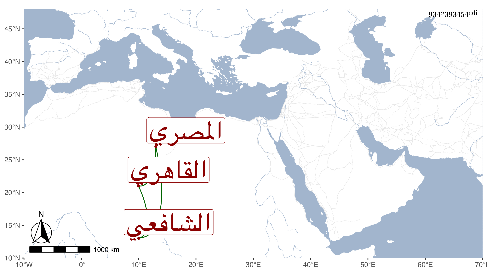

0902Sakhawi.DawLamic.ITO20230111-ara1.EIS1600.934239345406
Biography ID: 934239345406
491
محمد بن محمد بن محمد بن أحمد بن عز الدين الرضي بن المحب القاهري ثم المصري الشافعي أخو أحمد والتقى عبد الرحيم ويعرف كسلفه بابن الأوجافي . ولد في ربيع الأول سنة تسع وتسعين وسبعمائة وحفظ القرآن والعمدة والتنبيه وألفية النحو ، وعرض على جماعة وأسمعه أبوه على الجمال عبد الله الحنبلي والشرف بن الكويك والشهاب البطائحي والولي العراقي والنور الفوي وآخرين وأجاز له عائشة ابنة ابن عبد الهادي وطائفة واشتغل يسيرا على الولي العراقي ثم الشمس البدرشي وحضر دروس الشمس الشطنوفي ولكنه لم يمهر وتكسب بالشهادة وغيرها وحدث سمع منه الفضلاء أخذت عنه أشياء وكان ساكنا . مات في ربيع الأول سنة تسع وثمانين ودفن بتربتهم بالقرب من مقام الشافعي رحمه الله وإيانا .
